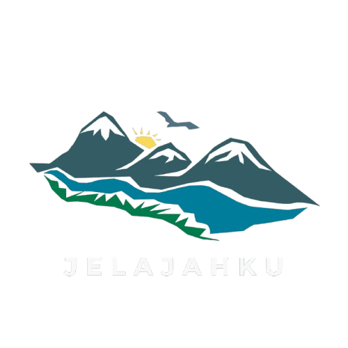

Gunung Prau terkenal sebagai destinasi pendakian ramah bagi pemula yang berlokasi di Provinsi Jawa Tengah, Indonesia. Gunung ini menawarkan pengalaman mendaki yang menarik dengan pemandangan indah dan memukau.
Ada beberapa destinasi wisata yang memasang tarif tiket masuk berbeda-beda pada hari minggu, hari libur dan hari biasa. Untuk Harga Tiket Masuk Gunung Prau yaitu sebesar Rp. 10.000. Harga tiket tersebut berlaku untuk weekdays maupun weekend.
Ada beberapa jalur yang dapat anda pilih sesuai dengan keinginan :


Gunung Prau dapat menjadi pilihan Anda yang menginginkan wisata yang berbeda dari sebelum-sebelumnya. Berbagai jalur pendakian dapat dipilih sesuai selera yang akan memudahkan Anda untuk sampai di puncak gunung prau. Nikmati suasana berbeda dengan keindahan alam yang begitu indah dan eksotis di wisata ini.